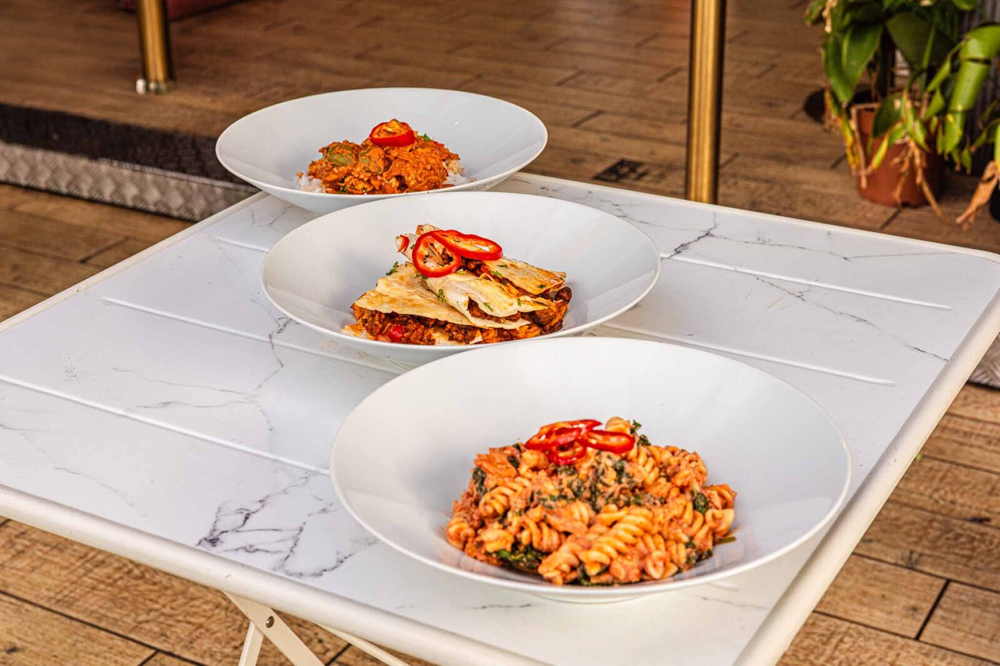

Our kitchen is run by a chef who spent years in fine-dining kitchens, where a sauce is tasted twenty times and a portion is weighed before it leaves the pass. That's the same discipline behind every tray we pack.
I grew up as a chef, and cooking has always been the thing I enjoy most. A few years ago I started trying to eat healthier myself — and ran into the same problem everywhere: quick, convenient food almost always meant an ingredients list full of E-numbers and things you'd expect to find in a lab, not a kitchen.
Prep 'N' Fresh is what I wanted for myself: meals made only with ingredients you'd recognise from your own cupboard, cooked properly, that still deliver on taste. The difference between our meals and a tasting menu isn't the standard, it's the aim — every dish is built to be eaten five days a week and still hit your numbers, not to impress once and be forgotten.

Proper stocks, brines, slow braises and sauces built the same way they'd be built in a professional kitchen — not from a pre-made base.
Every component of every dish is weighed at the recipe-development stage, so the macros on the label are calculated, not estimated.
Monday for Tuesday delivery, Thursday for Friday — blast-chilled the same day, so nothing sits around before it reaches you.
We're always happy to talk through allergies, macros, or a custom plan before you order.